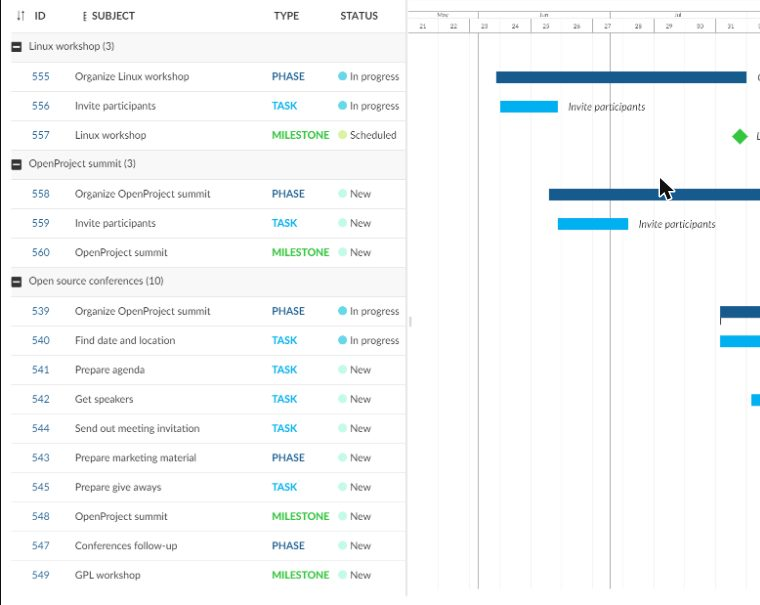

Início › Plataformas › OpenProject
Projetos · OpenProject · open source
Projetos no prazo, com horas e custo de verdade.
Planejamento em Gantt, execução em quadros ágeis, apontamento de horas e orçamento por projeto. O OpenProject é aberto e seguro, e implantamos com modelos para engenharia, obras e P&D, integrados ao ERP para que a hora vire custo.

Para quem é
Para quem entrega projeto e precisa saber se está ganhando dinheiro.
Escritórios de engenharia, desenvolvimento de produto, integradores e indústrias com projetos sob encomenda.
Hoje: Cronograma em planilha que ninguém atualiza. Atraso descoberto na véspera.
Com OpenProject: Gantt com dependências, linha de base e alerta de caminho crítico.
Hoje: Não sabe quais projetos dão lucro.
Com OpenProject: Horas e despesas por projeto, comparadas com o orçamento e o faturado.
Hoje: Tarefas chegam por e-mail, WhatsApp e corredor.
Com OpenProject: Quadro único por equipe, com prioridade, responsável e prazo.
Módulos e funcionalidades
Os recursos que configuramos
Ativamos os módulos por projeto e criamos modelos para que cada novo projeto já nasça com fases, tipos de tarefa e marcos padronizados.
Pacotes de trabalho
Tarefas, fases, marcos, riscos e entregáveis com tipos e estados próprios.
Tipos de tarefa, campos e fluxos de status.
Gantt e cronograma
Dependências, linha de base, caminho crítico e visão multiprojeto.
Modelos de cronograma por tipo de projeto.
Quadros ágeis
Kanban por status, equipe ou versão, com backlog e sprints.
Quadros por equipe e regras de priorização.
Horas e custos
Apontamento de horas, custos de mão de obra e despesas.
Taxas por função e envio de custos ao ERP.
Orçamentos
Orçamento por projeto, comparado com o realizado.
Estrutura de custos alinhada aos centros de custo.
Documentos e wiki
Wiki, documentos e arquivos ligados às tarefas.
Integração com armazenamento de arquivos (ex.: Nextcloud).
Reuniões
Pautas, atas e ações que viram tarefas.
Modelos de reunião de status e de cliente.
Portfólio e relatórios
Visão de todos os projetos, filtros e exportações.
Painel do portfólio e relatório semanal.
API e integrações
API REST e webhooks para ERP, Git e BI.
Conectores com Dolibarr, Aras e o painel de BI.
Alguns recursos (por exemplo, sincronização avançada de grupos e certos tipos de quadro) são da edição Enterprise, contratada pelo cliente com a OpenProject GmbH. A edição Community, gratuita, atende a maior parte dos projetos.
Processo de ponta a ponta
Do contrato ao encerramento com margem medida.
O ciclo de vida de projeto que implantamos, com a hora apontada virando custo no ERP.
Projeto criado a partir do modelo, ligado ao pedido do cliente.
OpenProject · DolibarrEstrutura analítica, Gantt e linha de base.
OpenProjectQuadros por equipe e tarefas do dia.
OpenProjectApontamentos viram custo no ERP.
OpenProject → DolibarrRelatório semanal e marcos ao cliente.
OpenProject + IAMargem real e lições aprendidas.
BITelas e estrutura
Telas do OpenProject

Integrações
OpenProject ligado ao ERP e à engenharia
Integrações por API, com fila e registro de cada troca. Se algo falha, a mensagem fica retida e você recebe um alerta. Nada se perde no caminho.
Horas e despesas viram custo no projeto e no centro de custo. Faturamento por marco volta ao projeto.
Entregáveis de engenharia ligados aos marcos. ECO aprovado abre tarefa no projeto.
Oportunidade ganha abre o projeto a partir do modelo certo.
Documentos do projeto versionados e ligados às tarefas.
Commits e pull requests ligados às tarefas, para equipes de software e firmware.
Prazo, esforço, custo e margem por projeto e cliente.
Inteligência artificial e BI
Status escrito sozinho e atraso visto antes.
IAAssistentes e automações
- Relatório semanal automático: o que avançou, o que atrasou e os riscos, a partir das tarefas e horas.
- Alerta de caminho crítico: aviso quando uma tarefa ameaça um marco contratual.
- Estimativa de esforço: sugestão baseada em projetos parecidos já encerrados.
- Ata para tarefas: transcrição da reunião vira ações com responsável e prazo.
- Perguntas ao portfólio: “quais projetos do cliente X estão acima do orçamento?”
Integração com IA: R$ 6.900 de setup + R$ 290/mês, mais o consumo de API do modelo, repassado sem margem. As respostas respeitam o perfil de acesso de quem pergunta e não treinam modelos de terceiros. Como funciona a IA
BIIndicadores entregues
- Margem por projeto orçado × realizado × faturado.
- Prazo marcos cumpridos, desvio da linha de base.
- Utilização da equipe horas faturáveis por pessoa e função.
- Portfólio projetos por fase, risco e cliente.
- Produtividade lead time das tarefas por tipo.
BI de dados: R$ 2.900 de setup + R$ 490/mês. Painéis em Metabase ou Power BI, com alertas por e-mail e WhatsApp. Exemplo de painel
Infraestrutura
Seguro, em contêiner, no seu subdomínio.
O OpenProject roda em Linux, em contêiner, com PostgreSQL. Hospedamos com atualização testada, backup diário e acesso com autenticação única, sozinho ou junto com ERP e CRM.
Dimensionamento recomendado
| Uso | Ambiente | Mensal |
|---|---|---|
| Até 20 usuários | VM P · 2 vCPU / 4 GB | R$ 290 |
| 20 a 60 usuários | VM M · 4 vCPU / 8 GB | R$ 540 |
| Junto com ERP e CRM | VM M ou G (stack completa) | R$ 540 a 990 |
| Dados na empresa | Servidor local gerenciado | R$ 390 |
Setup de ambiente R$ 690 (uma vez). Backup externo R$ 0,50/GB/mês, mínimo R$ 60.
Implantação
Primeiro projeto rodando em quatro semanas.
Começamos com um projeto-piloto real. O modelo que sai dele vira o padrão para os próximos.
Entregáveis
- OpenProject configurado e hospedado
- Modelos de projeto padronizados
- Projeto-piloto carregado
- Apontamento de horas com custo
- Integração com o ERP
- Treinamento de gerentes e equipes
Fases, tipos de tarefa, status, papéis e permissões.
Modelo de cronograma e quadro, com o piloto já carregado.
Taxas por função, orçamento e envio de custos ao ERP.
Painel do portfólio, relatório semanal e treinamento das equipes.
Investimento
OpenProject: preço fechado, sem licença na edição Community.
Preço fechado por projeto, depois do diagnóstico. Setup pago 50% na assinatura e 50% na entrega.
| Serviço | Modelo | Preço |
|---|---|---|
| Implantação Essencial (1 sistema, até 10 usuários, ~40 h) | Projeto | R$ 6.900 |
| Implantação Integrada (ERP + CRM + Projetos, ~100 h) | Projeto | R$ 16.900 |
| Banco de 20 h de customização | Pré-pago | R$ 3.400 |
| Treinamento (4 h, até 8 pessoas) | Avulso | R$ 1.200 |
| Suporte Básico (4 h) / Pro (10 h) | Assinatura | R$ 690 / R$ 1.590 por mês |
| Sustentação por usuário | Assinatura | R$ 25/usuário/mês (mín. R$ 250) |
| Hora técnica | Avulso | R$ 180/h |
| BI de portfólio | Setup + assinatura | R$ 2.900 + R$ 490/mês |
Recursos da edição Enterprise, quando necessários, são contratados pelo cliente diretamente com a OpenProject GmbH.
Dúvidas
Perguntas sobre OpenProject
Substitui o MS Project?
Para a maioria dos projetos, sim: Gantt com dependências, linha de base e visão multiprojeto, com colaboração pelo navegador e sem licença por usuário na edição Community.
Dá para usar ágil e cascata juntos?
Sim. O mesmo projeto pode ter Gantt para os marcos e quadros ágeis para a execução das equipes.
O cliente pode acompanhar o projeto?
Sim, com um papel de acesso restrito ao que ele deve ver, como marcos, entregáveis e reuniões.
Importa cronogramas existentes?
Importamos tarefas e marcos de planilhas e arquivos do MS Project, com conferência das dependências.
Vamos colocar seus projetos sob controle?
Diagnóstico gratuito de 45 minutos. Respondemos em até 1 dia útil.